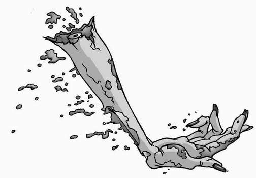

The door to the girls’ toilets opened slowly, and James cautiously took a step inside.
‘What’s the matter?’ asked Alexander, forcing the door wide and pushing past him. ‘Scared something might bite you?’
‘No,’ answered James, ‘it’s just that I’ve never been inside the girls’ toilets before.’
‘Me neither,’ added Lenny.
‘Well, I’ve been in here loads of times,’ boasted Alexander. ‘Being the headmaster’s son does have some advantages, you know!’
Lenny opened his mouth to ask what the advantage to having access to the girls’ toilets might be, but James silenced him with a single shake of his head. They followed their eager friend through the door, letting it swing shut behind them.
James studied the room. It was just like the boys’ toilets, except the cubicles were on the opposite side to the door, and the walls were painted in a violent pink instead of the murky grey that greeted the male pupils each day.
‘Phew, I hope it didn’t smell like that when she ate it!’ said Lenny, pinching his nose closed and screwing up his face.
‘What?’ asked James, sniffing the air before suddenly wishing he hadn’t. The stench was overpowering.
‘Whatever Stacey Carmichael was producing in cubicle four!’ replied Lenny, trying not to take a breath.
Alexander shook his head earnestly. ‘That’s not a human odour,’ he said, flicking his tongue out as though trying to taste the smell. ‘Human faeces has a nitrogen and sulphur base, while this aroma has a metallic tinge, as though there’s some kind of magnesium compound at work.’
‘You what?’ asked Lenny through clenched lips.
‘He means, that ain’t no normal poo,’ explained James. He turned to Alexander. ‘Remember we talked about you getting out more often? Not working, is it?’
‘Shh!’ commanded Alexander. ‘Quiet!’
All three boys stopped where they were and listened hard. A faint bubbling sound could be heard…and it was coming from cubicle four.
‘That’ll be where your geranium smell’s coming from then,’ said Lenny, prodding at the cubicle door with his foot.
‘Magnesium, not geranium!’ sighed Alexander. ‘We covered all this stuff in science at least three weeks ago. Don’t you ever listen to a word Mr Watts says?’
Lenny simply shrugged, and pulled his misshapen jumper up over his face to try and combat the stink.
‘Well, go on then!’ said James to Alexander, pushing him towards the cubicle door.
‘Why me?’ asked Alexander. ‘There’s no reason why it has to be me who goes in there.’
‘You’re the one who knows all about this stuff. You just told us, remember, Einstein?’
‘About the chemical make-up of the smell, certainly,’ argued Alexander. ‘But if there’s someone—or something—in there, I think I’ve proved conclusively that I’m the least capable at handling that type of scenario!’
‘Something?‘ said James. ‘What do you think is in there? The Bogeyman?’
‘I don’t know what’s in there,’ replied Alexander, ‘none of us does. But in case it’s one of The Gorilla’s cronies messing about, or someone else that needs physically manhandling, I think it should be Lenny who goes in first.’
‘What?’ cried Lenny, spinning round to stop Alexander from hiding behind him. ‘Why me?’
‘You’re the biggest,’ explained Alexander. ‘The muscle to my mind. The brawn to my brains.’
‘What does that make me?’ asked James.
Alexander shrugged. ‘You’re the looks.’
The toilet inside the closed cubicle let out a loud burp, and Lenny backed away from the door. ‘I think James should go in first!’ he said.
‘What, and risk spoiling these looks? No way!’
‘Honestly. There’s nothing to be worried about,’ said Alexander. ‘The toilet simply hasn’t been maintained in the correct manner by Mr Wharpley. The drains have backed up and, when Stacey tried to flush, the pipes spewed a handful of waste over her precious ballet pumps. Being girls, they just made a big deal out of it.’
‘I don’t know,’ muttered Lenny. ‘Leandra says that one’s the haunted toilet.’
Alexander laughed. ‘A haunted toilet is a scientific impossibility. The existence of an afterlife has yet to be proven and, should life after death ever be shown to be a reality, I seriously doubt it would locate itself beyond the U-bend of a school toilet.’
‘Well, go and have a look then!’ said Lenny.
‘No chance!’
James turned away from the mirror, where he’d been examining his newly discovered looks. ‘You know, we could always just tell the girls we went in there…’
‘What do you mean?’ asked Alexander.
‘Simple,’ replied James. ‘We just go out there and tell them we stormed the cubicle, faced down whatever was in there, and emerged triumphant.’
‘A deception?’ pondered Alexander. ‘That would definitely go some way to enhancing my image around the school.’
‘And it would certainly impress Stacey Carmichael, wouldn’t it, Romeo?’ said Lenny, nudging James repeatedly on the arm.
James blushed a shade of pink that almost matched the toilet walls. ‘I don’t know what you’re talking about!’ he mumbled.
‘Then it’s settled!’ announced Alexander. ‘We go back outside, and proclaim victory!’
As the three boys turned to leave the room, the main door swung open. Stacey and Leandra stepped inside.
‘Well?’ asked Stacey.
‘Well what?’ said James, carefully avoiding eye contact with her.
‘What happened when you went into the cubicle?’ asked Leandra.
Alexander walked forwards, oozing what he believed was charm. ‘It was a tremendous skirmish. We battled a mutant being comprised entirely of waste materials, ripping and tearing at its rancid, engorged body. However, we stood our ground, defeated the creature, and the facility is now safe for use again.’
Stacey remained expressionless. ‘So, you haven’t been in there at all?’ she said.
James shook his head. ‘No, not even a peek.’
Alexander folded his arms and sighed. ‘What did you say that for? We had them, then!’
‘We’re not as dumb as you look, Stick boy!’ said Leandra. ‘Now, get in that cubicle and see what’s happening.’
James looked from Alexander to Lenny and back again. Then, realising that neither one was going to move, he took a deep breath. ‘All right! I suppose I’ll have to do it!’
He strode over to cubicle four, closed his eyes tightly and pushed the door open. After a second, when no one had come rushing out at him, he opened his eyes and looked inside. The cubicle was empty and, apart from the fact that the water in the toilet bowl was bubbling slightly, everything looked fine.
‘See!’ he said. ‘I told you there was nothing to worry about!’
But the words stuck in his throat as the toilet let out another enormous belch. James gasped as a withered, grey human hand launched itself up from the water, and landed on his face.
